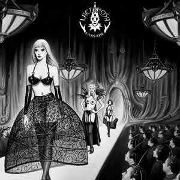
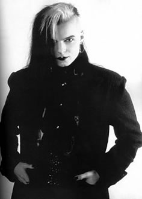

Entrevista
de Tilo Wolff à Emanuel Ferreira - Revista Loud
Esse novo disco, Fassade, aparece no mercado através da gravadora Nuclear Blast. Como você tem sua própria gravadora, poderia nos explicar qual é a situação atual em termos de contratos? Chegamos à conclusão, durante os últimos anos, que cada vez mais ficávamos com menos tempo para fazer músicas devido a estarmos tão ocupados com a Hall of Sermon. Por isso, desta vez decidimos nos concentrar mais na música e licenciar o disco a outra editora. A escolha recaiu sobre a Nuclear Blast; desta forma podemos nos concentrar mais no campo artístico... O acordo engloba apenas o Lacrimosa porque, para termos mais tempo, terminamos a colaboração com outros grupos a nível de Hall of Sermon. Tivemos a gravadora durante 10 anos e nesse tempo, grupos muito bons e interessados trabalharam conosco. Agora que eles já estão mais desenvolvidos, podem dar os seus próprios passos no mundo da música e assim nós nos concentramos no nosso trabalho.
Apesar de a dada altura, as bandas góticas se terem tornado bastante populares no meio do movimento metal, o Lacrimosa nunca foi muito apreciado nesse meio. Este disco e este contrato vão ajudar a melhorar essa relação? Não sei, é sempre difícil dizer algo em relação a isso. Sobre este disco, algumas pessoas já me disseram que é o mais sinfônico que fiz até agora, enquanto que outras me disseram que é o mais metal. As pessoas pensam de uma forma bastante diversa e por isso não sei se vai nos aproximar ou não. Pessoalmente não me agrada a idéia de fazer música para determinados movimentos ou estilos. Quem quiser que nos ouça, não me interessa sé é gótico ou metaleiro. Além disso, o contrato com a Nuclear Blast não tem nada a ver com pretendermos ser mais apreciados no meio de um movimento específico. Se fosse para isso, seria estúpido, pois nunca teríamos a certeza de sermos aceitos no meio e, ao mesmo tempo, perderíamos nossos fãs góticos. Estamos trabalhando com eles, porque o dono da gravadora - assim como algumas pessoas da equipe - já nos conhece desde o início. Basicamente é isso. Eles têm acompanhado nossa carreira, entendem do meio e empenham-se naquilo que fazem, por isso optamos por essa união.
Depois de todos esses anos e apesar da sua internacionalização, você ainda insiste em escrever letras em alemão e escrever temas incrivelmente longos, por vezes divididos em várias partes... Antes de escrever música eu já compunha letras para expressar meus sentimentos, só mais tarde é que senti a necessidade de completar isso com uma segunda dimensão: a música. Queria apenas acrescentar algo mais às letras, mas não queria passar a escrever em inglês apenas porque agora eu estava musicando minhas letras. Nunca tive a intenção de me tornar popular ou atingir muita gente, claro que hoje estou contente pelo Lacrimosa ser tão popular e chegar a países que não falam o idioma alemão. No entanto, não vou começar a escrever em outra língua que não seja o alemão só para me tornar mais popular. Para que entendam as letras, temos sempre o cuidado de as traduzir nos encartes dos CD's. Por vezes, como em Copycat, tive a necessidade de exprimir certos pensamentos em inglês, porque não funcionariam em alemão. No futuro talvez escreva dois ou três temas em inglês para nossos discos, mas isso não é uma prioridade. Quanto a compor temas longos, confesso que não sei escrever para agradar as pessoas. É normal me dizerem que minhas músicas são compridas e complicadas, mas não posso mudar se não sentir. Se às vezes acaba parecendo um pouco longo é porque tinha de ser assim...
Você mencionou Copycat, que provavelmente é sua música mais comercial. Você sentiu pressão da gravadora ou dos fãs para escrever mais músicas como Copycat? De certa forma... Quando escrevi essa música, as pessoas me diziam que eu não a deveria fazer, que eu não a deveria gravar, que ninguém ia gostar porque não era uma música que pudesse servir ao Lacrimosa. Nessa época eu disse que se eu a havia composto, então poderia ser Lacrimosa. Depois a música se tornou uma espécie de êxito e as pessoas passaram a me dizer que eu deveria compor mais músicas como Copycat. Só que agora não sinto vontade de escrever algo assim, por isso não o faço. Talvez no futuro eu escreva algo do gênero, mas apenas se essa for a minha vontade.
Seus shows são conhecidos por serem extremamente elaborados. O que se pode esperar deles? Em estúdio estou muito perto dos meus sentimentos e tento trabalhar de forma pessoal, até íntima. Em palco a situação é diferente, tento ver os temas de uma forma diferente e quando me abro para a audiência - e se ela me inspirar - tenho momentos em que passo ao improviso e, por exemplo, se uma música tiver terminado, é normal que eu a recomece e os músicos têm que me acompanhar e capturar as sensações que eu tenho no momento e que tento expressar para os espectadores. É muito importante a forma como a audiência reage e creio que são eles e a banda que criam juntos o ambiente, e não apenas o show em si.
Já que você trabalhou diversas vezes em estúdio com orquestras, você nunca pensou em fazer algo ao vivo com uma, como o Metallica já fez? Talvez um dia eu escreva algo em que ache que a orquestra tem realmente que estar presente. Em Fassade pretendo executar o disco como algo vivo e dependente das emoções do momento. Com uma orquestra teríamos que ficar limitados ao que estivesse ensaiado e escrito nas partituras, sem improviso... Acaba parecendo mais com uma peça de teatro. Não quero fazer isso agora, talvez no futuro.
Há cinco anos o movimento gótico estava mais popularizado e espalhado do que hoje. Como você encara a cena atual? Bem, no momento acho que o movimento está se desenvolvendo bastante. Muita gente se interessa pelo Heavy Metal e hoje, as linhas que separam o gótico do Gothic Rock ou do Dark Metal, são menos definidas. Por outro lado, outras pessoas se interessam pelo componente eletrônico de uma forma que não me agrada tanto. Creio que, no geral, todo movimento está num processo de desenvolvimento. Se isso não acontecesse o movimento estaria morto, porque as pessoas não podem viver eternamente num ciclo de repetição.
Extraída de www.lacrimosa.brasil.nom.br
|